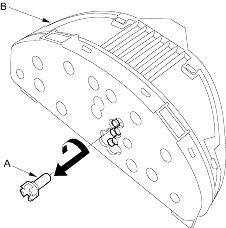

- Remove the gauge assembly (see page 22-93).
- Replace the bulb (A) at the gauge assembly (B).

A/T Gear Position Indicator
|
14-354 |
SRS components are located in this area. Review the SRS component locations (see page 23-23), precautions and procedures (see page 23-25) in the SRS section before performing repairs or service.
 |